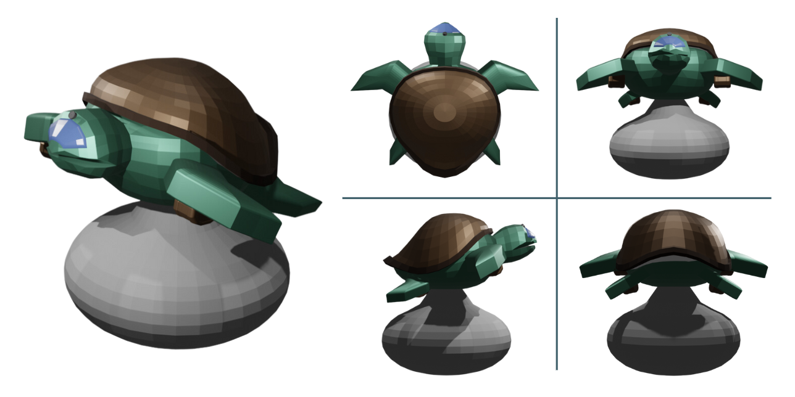
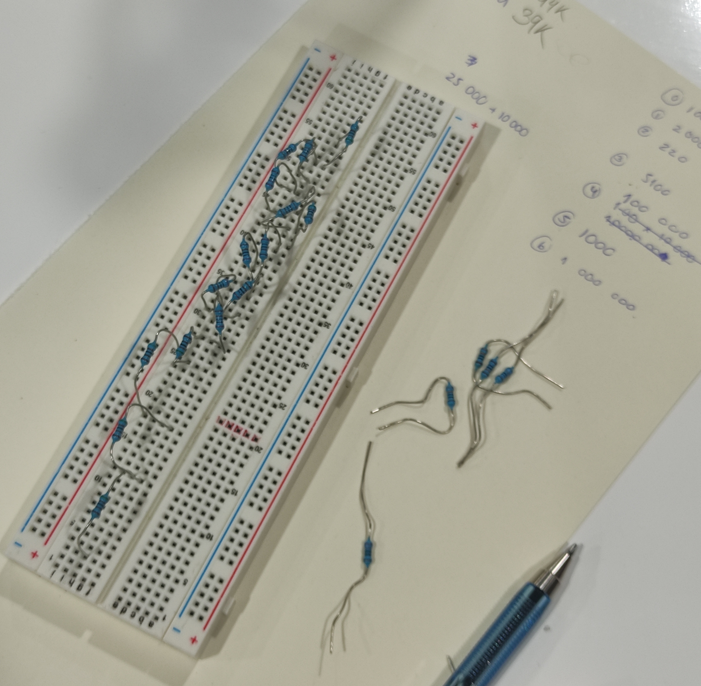
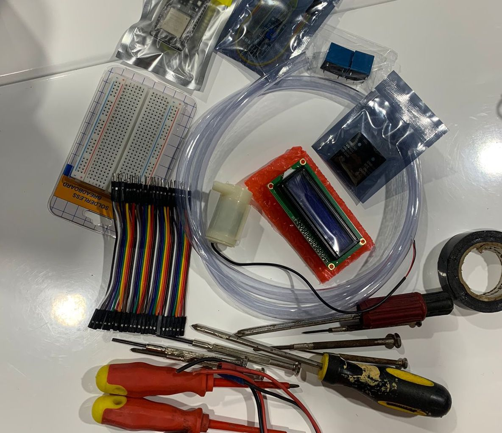

Reasons to stand up and chaise your dreams
Durante la primera semana conocimos los reglamentos del curso y los temas que trataríamos durante el ciclo. Así mismo, hicimos una pequeña actividad grupal para conocernos mejor. Cada grupo realizó un dibujo que represente las características de sus representantes. La actividad fue amena y divertida, al final, cada grupo explicó su dibujo para la clase.
En la segunda clase de la semana, aprendimos como crear una bitácora virtual en GitHub y descargamos Visual Studio Code, en donde cargamos una plantilla de página web de HTML5 para poder editarla más tarde y personzalizarla.
No tuvimos clase durante la semana 2 por feriado de Semana Santa.
Esta semana formamos grupos de trabajo, elegimos una ODS y una propuesta de solución. Mi grupo propuso un robot con forma de tortuga que recolecte basura en los mares, ayudado por una red de recolección e hidropropulsores. Realizamos bocetos de como se vería el robot y como es que funcionaría.
Esta última propuesta fue trabajada a mayor produndidad, después de clase, exponiendo mejor nuestros objetivos, los recursos tecnológicos que usaríamos, un modelo en 3D y, finalmente, realizando entrevistas al público para saber su opinión al respecto.
En las clases virtuales aprendimos a lanzar una página web trabajada en Visual studio code a Github a través de GIT. De esta manera, los cambios que realicemos en el programa VSC se actualizarán en la página web para el público.
En la clase aprendimos sobre la corriente alterna y la corriente constinua, y las unidades de medida relacionadas a estas. Hablamos a profundidad sobre la ley de Ohm. La Tensión, medida en Voltios, es igual a Corriente, medida en Amperios, por la Resistencia, medida en Ohmnios. Durante clase realizamos un ejercicio, con ayuda del protobar, en donde identificamos la cantidad de resistencia en cada una de las distintas resistencias que disponíamos. Aprendimos que cada color en las línas dibujadas en las resistencias representan un valor numérico.
 En la clase presencial, realizamos 3 ejercicios con el protobar: Encendido de 1 foco Led, encendido de 3 focos Led, y funcionamiento de un sensor de movimiento para encender un foco Led. Para estos ejercicios combinamos la electrónica y la programación.
En la clase presencial, realizamos 3 ejercicios con el protobar: Encendido de 1 foco Led, encendido de 3 focos Led, y funcionamiento de un sensor de movimiento para encender un foco Led. Para estos ejercicios combinamos la electrónica y la programación.
Durante la clase virtual, repasamos el uso de ThinkerCAD y realizamos conexiones con un protobar virtual para encender 3 Leds intermitentes a modo de semáforo.
 Esta semana, simulamos el sistema de una puerta que se abre automaticamente al sentir la presencia de alguien a cierta distancia. Para ello programamos un sensor de movimiento que reacciona a 20 cm de distancia.
Esta semana, simulamos el sistema de una puerta que se abre automaticamente al sentir la presencia de alguien a cierta distancia. Para ello programamos un sensor de movimiento que reacciona a 20 cm de distancia.
Durante la clase virtual, nuestro profesor explicó con mayor claridad el código del sistema.
El primer objetivo de la clase fue progrmar una tira led para que emita diferentes colores en cada uno de sus focos. A continuación, el segundo objetivo fue adjunta un botón y una pantalla led; el botón hace que las luces cambien de colore, mientras que en la pantalla LCD, se mostraba,en letras, el color emitido.
En clase virtual, el profesor volvió a mostrar como hacer el código correctamente y avanzamos con los proyectos de laboratorio.
Durante la semana, buscamos, virtulmente, las piezas para nuestro proyecto: Life Box, un mini invernadero. Asimismo, definimos el algoritmo, avanzamos con la programación y avanzamos con los detalles de la página web grupal.
Esta semana, llegaron los componentes que pedimos vía online para nuestro Life Box, avanzamos con la programación, la construcción y la soldadura de la pantalla LCD. Tambien, trabajamos con los sensores de temperatura y humedad del ambiente.